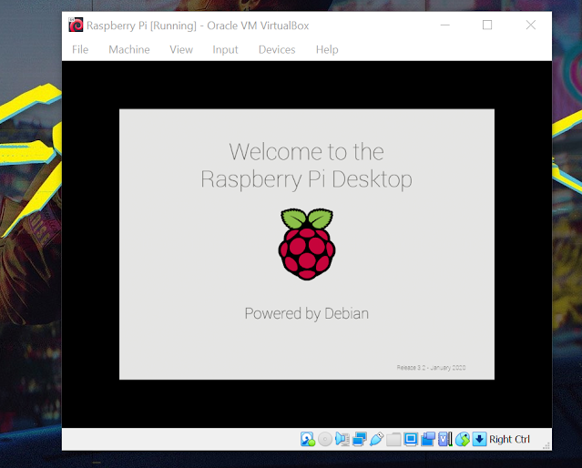
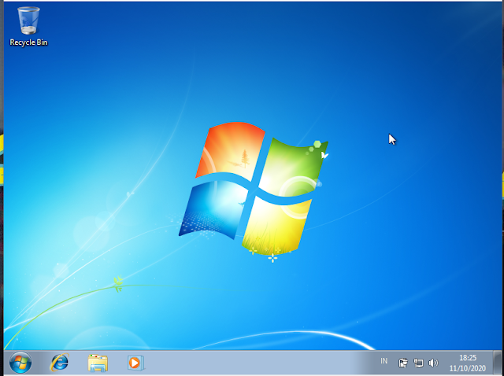
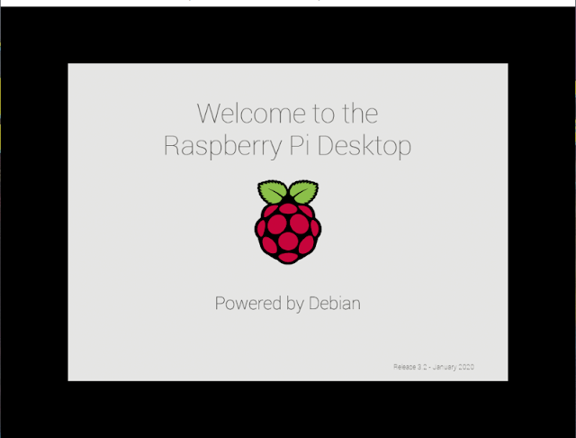

Sejarah Sistem Operasi
Senin, 14 Februari 2022. 12.00 WITA
Pada masa-masa awal perkembangan komputer (1945-1955) komputer masih belum memiliki yang namanya sistem operasi, terlebih lagi yang seperti saat ini. Adapun pada saat itu user atau pengguna menjalankan komputer dengan sistem manual.
Lalu, pada kisaran tahun 1955-1965 mulai didapati fungsi-fungsi dalam OS meskipun belum lengkap. Pada masa-masa ini pun dikembangkan & diperkenalkan sebuah sistem yang bernama batch processing system yakni sistem yang dapat melakukan pekerjaan secara berangkai atau urut.
Klik Untuk Membaca Artikel Lebih Lanjut
Macam-Macam Jenis Partisi Pada Sistem Operasi Microsoft Windows
Selasa, 15 Februari 2022. 13.00 WITA
A. FAT (File Allocation Table)
Merupakan jenis partisi yang cukup tua, jenis partisi ini digunakan saat sistem operasi masih menggunakan DOS, dan masih menggunakan disk berupa floppy disk atau disket dalam mengatur proses partisinya. Serta, jenis partisi ini hanya berfungsi sebatas sebagai recovery saja.
B. FAT16 (File Allocation Table 16)
Merupakan jenis partisi yang dikeperkenalkan oleh MS-DOS (1981). Adapun jenis partisi yang satu ini di desain untuk mengatur file yang berada di floppy disk atau disket. FAT16 ini mempunyai keunggulan seperti dapat kompatibel di hamper semua sistem operasi (Windows 95/98/me, OS/2, Linux, & Unix). FAT16 juga meliki kekurangan yakni seperti kapasitas tetap jumlah cluster dalam partisi dan tidak support sistem kompresi, enkripsi, serta kontrol akses dalam partisi.
Klik Untuk Membaca Artikel Lebih Lanjut
Macam-Macam Jenis Partisi Pada Sistem Operasi Linux
Rabu, 16 Februari 2022. 14.00 WITA
A. Partisi Primary
Merupakan jenis partisi utama pada hard drive sistem operasi Linux. Jenis partisi ini dapat memuat hingga maksimal 4 partisi. Adapun penamaan partisi menempati nomor partisi yakni seperti sda1, sda2, sd3, & sda4.
B. Partisi Extended
Merupakan jenis partisi yang digunakan atau berfungsi sebagai perluasan untuk mengatasi kekurangan dari partisi primary. Jika ingin memiliki partisi lebih dari 4 maka partisi extended dibutuhkan yaitu dengan cara mengorbankan satu jenis partisi primary kemudian digunakan oleh partisi extended. Adapun penamaan partisi menempati nomor partisi primary dan ditambahkan 1. Misal memiliki 3 partisi primary dan 1 extended, maka partisi extendednya akan bernama sda4. Pada partisi extended juga berisikan partisi-partisi logical.
Klik Untuk Membaca Artikel Lebih Lanjut